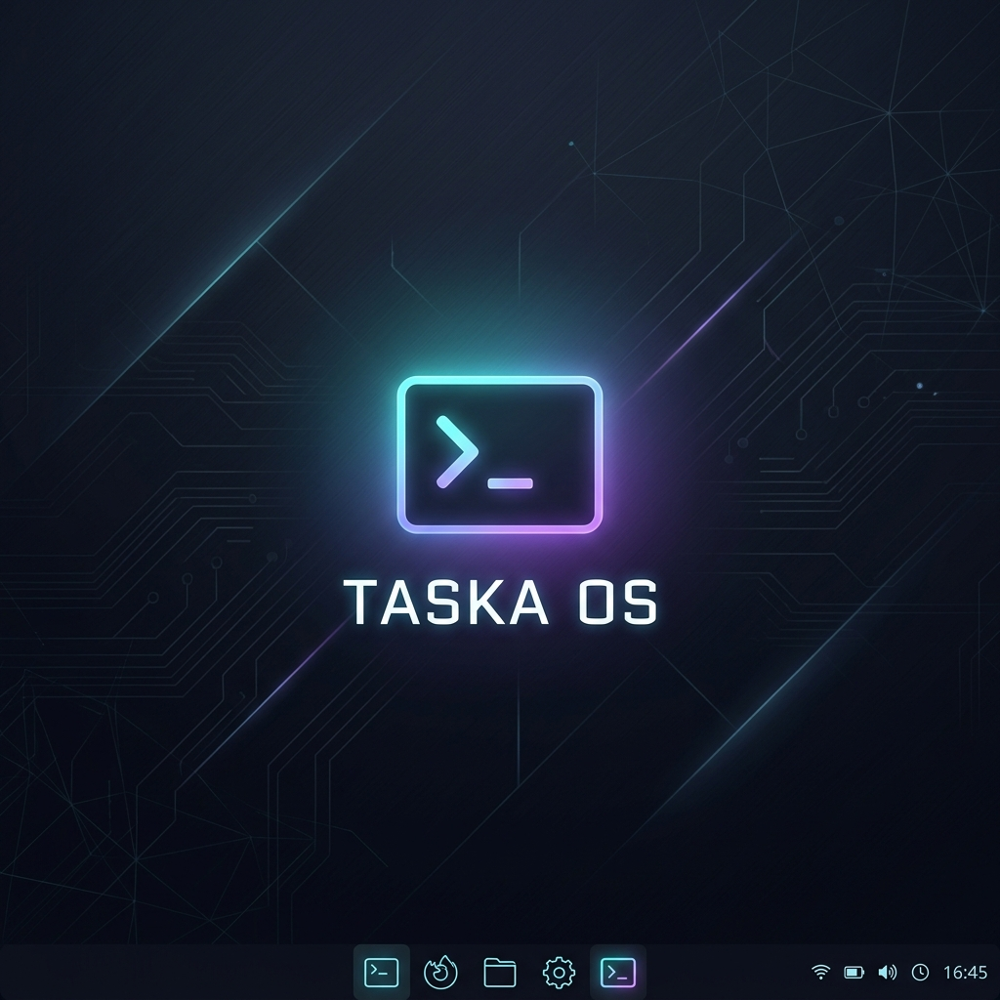

Taska OS es una distribución Linux ultra-ligera con Openbox, optimizada para arrancar directamente en RAM, con LibreOffice completo, Firefox ESR y cero desgaste en tu pendrive.

Cada optimización ha sido pensada específicamente para la naturaleza de las memorias flash.
Núcleo Zen-tuned de baja latencia. Las ventanas abren instantáneamente y la multitarea jamás se congela, incluso en puertos USB 2.0.
La swap se comprime en la RAM mediante el algoritmo zstd. Sin escrituras en la flash del USB, sin lag y con el doble de durabilidad.
Writer, Calc, Impress, Draw, Math y Base preinstalados en español con total compatibilidad con formatos de Microsoft Office.
Solo un gestor de ventanas, sin escritorio pesado. Picom, Tint2, Rofi y Conky conforman un entorno visualmente premium a 15MB de RAM.
/tmp, /var/log y /var/tmp en tmpfs (RAM). Opción noatime en fstab. El USB no se escribe mientras navegas o trabajas, solo cuando guardas tus archivos.
Descarga un paquete ZIP con todos los archivos de configuración listos. Solo extrae y ejecuta sudo ./build.sh en Linux o WSL.
Interactúa con la interfaz real: abre aplicaciones, usa el menú Rofi, arrastra ventanas y escribe comandos en la terminal.
Configura las opciones y descarga un paquete .zip completo con todos los archivos de configuración listos para compilar tu ISO.
📦 Incluye build.sh + clean.sh + todas las configuraciones de Openbox, Tint2, Rofi, Picom, Conky, ZRAM y fstab optimizado — listo para usar con sudo ./build.sh
Configura las opciones para ver el contenido del paquete...
Sigue la guía interactiva para construir y flashear tu propio USB.
Ve a la sección Personalizador de arriba y selecciona tus opciones de escritorio, ofimática y optimizaciones. Luego haz clic en el botón de descarga.
Recibirás un archivo taska-build-package.zip que contiene la estructura completa de Debian Live-Build con todas las configuraciones de Taska OS listas para usar.
Extrae el paquete ZIP descargado. Abre una terminal en la carpeta taska-live-build/ y ejecuta los siguientes comandos:
# Dar permisos de ejecución
chmod +x build.sh clean.sh
# Compilar la ISO de Taska OS
sudo ./build.shEl proceso tarda entre 20–60 minutos según tu conexión a internet y la velocidad del equipo. La ISO final aparecerá en la misma carpeta.
Usa Rufus (Windows) o BalenaEtcher (cualquier sistema) para grabar la ISO en tu pendrive USB.
⚠️ ¡Atención! Todos los datos del USB serán borrados. Usa un USB de mínimo 4 GB.
live-image-amd64.hybrid.iso).Conecta tu USB, apaga el equipo y enciéndelo. Presiona repetidamente la tecla del Menú de Arranque:
Selecciona tu USB en la lista y presiona Enter. ¡Taska OS iniciará automáticamente en tu escritorio Openbox!